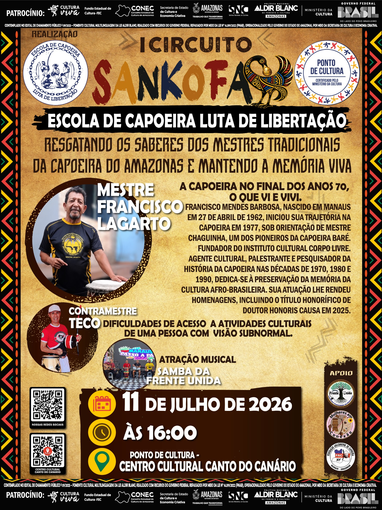

I Circuito Sankofa
Mestre Francisco Lagarto
Data: 11 de julho de 2026
Horário: 16h
Local: Ponto de Cultura — Centro Cultural Canto do Canário
Encontro dedicado à preservação da memória da capoeira no Amazonas, com participação de Mestre Francisco Lagarto, Contramestre Teco e atração musical Samba da Frente Unida.
Veja as fotos do evento